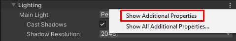

Scriptable Render Pipeline Batcher
The Scriptable Render PipelineA series of operations that take the contents of a Scene, and displays them on a screen. Unity lets you choose from pre-built render pipelines, or write your own. More info
See in Glossary (SRP) Batcher is a draw call optimization that significantly improves performance for applications that use an SRP. The SRP Batcher reduces the CPU time Unity requires to prepare and dispatch draw calls for materials that use the same shaderA program that runs on the GPU. More info
See in Glossary variant.

Requirements and compatibility
This section includes information about the render pipeline compatibility of the SRP Batcher.
Render pipeline compatibility
| Feature | Built-in Render Pipeline | Universal Render Pipeline (URP) | High Definition Render Pipeline (HDRP) | Custom Scriptable Render Pipeline (SRP) |
|---|---|---|---|---|
| SRP Batcher | No | Yes | Yes | Yes |
GameObject compatibility
In any given sceneA Scene contains the environments and menus of your game. Think of each unique Scene file as a unique level. In each Scene, you place your environments, obstacles, and decorations, essentially designing and building your game in pieces. More info
See in Glossary, some GameObjectsThe fundamental object in Unity scenes, which can represent characters, props, scenery, cameras, waypoints, and more. A GameObject’s functionality is defined by the Components attached to it. More info
See in Glossary are compatible with the SRP Batcher, and some aren’t. Compatible GameObjects use the SRP Batcher code path, and non-compatible GameObjects use the standard SRP code path. For more information, see How the SRP Batcher works.
A GameObject must meet the following requirements to be compatible with the SRP Batcher code path:
- The GameObject must contain either a meshThe main graphics primitive of Unity. Meshes make up a large part of your 3D worlds. Unity supports triangulated or Quadrangulated polygon meshes. Nurbs, Nurms, Subdiv surfaces must be converted to polygons. More info
See in Glossary or a skinned mesh. It can’t be a particle. - The GameObject mustn’t use MaterialPropertyBlocks.
- The shader that the GameObject uses must be compatible with the SRP Batcher. For more information, see Shader compatibility.
Shader compatibility
All lit and unlit shaders in the High Definition Render Pipeline (HDRP) and the Universal Render Pipeline (URP) fit this requirement (except for the particle versions of these shaders).
For a custom shader to be compatible with the SRP Batcher it must meet the following requirements:
- The shader must declare all built-in engine properties in a single constant buffer named
UnityPerDraw. For example,unity_ObjectToWorld, orunity_SHAr. - The shader must declare all material properties in a single constant buffer named
UnityPerMaterial.
You can check the compatibility status of a shader in the InspectorA Unity window that displays information about the currently selected GameObject, asset or project settings, allowing you to inspect and edit the values. More info
See in Glossary panel.

Using the SRP Batcher
This section contains information on how to use the SRP Batcher in Unity’s pre-built Scriptable Render Pipelines.
Using the SRP Batcher in URP
To activate the SRP Batcher in URP:
- In the Project windowA window that shows the contents of your
Assetsfolder (Project tab) More info
See in Glossary, select the URP Asset. - In the Inspector for the URP asset, enable SRP Batcher. If this option is not visible, follow the instructions below.
Note: If assets or shaders in a project are not optimized for use with the SRP Batcher, low performance devices might be more performant when you disable the SRP Batcher.
How to show Additional Properties for the URP Asset
Unity doesn’t show certain advanced properties in the URP Asset by default. To see all available properties:
- In the URP Asset, in any section, click the vertical ellipsis icon (⋮) and select Show Additional Properties.

Unity shows all available properties in the current section.
To show all additional properties in all sections:
- Click the vertical ellipsis icon and select Show All Additional Properties. Unity opens the Core Render Pipeline section in the Preferences window.
- In the property Additional Properties > Visibility, select All Visible.

Using the SRP Batcher in HDRP
When you use HDRP, Unity enables the SRP Batcher by default. Disabling the SRP Batcher isn’t recommended. However, you can temporarily disable the SRP Batcher for debugging purposes.
To enable and disable the SRP Batcher at build time using the Editor:
- In the Project window, select the HDRP Asset.
- In the Inspector for the asset, enter Debug mode. In Debug mode, you can see the properties of the HDRP Asset, including the SRP Batcher property.
- Select Enable SRP Batcher to enable or disable the SRP Batcher.
To enable or disable the SRP Batcher at runtime, toggle the following global variable in your C# code:
GraphicsSettings.useScriptableRenderPipelineBatching = true;
How the SRP Batcher works
The traditional way to optimize draw calls is to reduce the number of them. Instead, the SRP Batcher reduces render-state changes between draw calls. To do this, the SRP Batcher combines a sequence of bind and draw GPU commands. Each sequence of commands is called an SRP batch.

To achieve optimal performance for your rendering, each SRP batch should contain as many bind and draw commands as possible. To achieve this, use as few shader variants as possible. You can still use as many different materials with the same shader as you want.
When Unity detects a new material during the render loop, the CPU collects all properties and binds them to the GPU in constant buffers. The number of GPU buffers depends on how the shader declares its constant buffers.
The SRP Batcher is a low-level render loop that makes material data persist in GPU memory. If the material content doesn’t change, theSRP Batcher doesn’t make any render-state changes. Instead, the SRP Batcher uses a dedicated code path to update the Unity Engine properties in a large GPU buffer, like this:

Here, the CPU only handles the Unity Engine properties, labeled Per Object large buffer in the above diagram. All materials have persistent constant buffers located in GPU memory, which are ready to use. This speeds up rendering because:
- All material content now persists in GPU memory.
- Dedicated code manages a large per-object GPU constant buffer for all per-object properties.
Intentionally removing SRP Batcher compatibility for GameObjects
In some rare cases, you might want to intentionally make particular GameObjects incompatible with the SRP Batcher. For example, if you want to use GPU instancing, which isn’t compatible with the SRP Batcher. If you want to render many identical meshes with the exact same material, GPU instancing can be more efficient than the SRP Batcher. To use GPU instancing, you must either:
- Use Graphics.RenderMeshInstanced.
- Manually remove SRP Batcher compatibility and enable GPU instancing for the material.
There are two ways to remove compatibility with the SRP Batcher from a GameObject:
- Make the shader incompatible.
- Make the renderer incompatible.
Tip: If you use GPU instancing instead of the SRP Batcher, use the ProfilerA window that helps you to optimize your game. It shows how much time is spent in the various areas of your game. For example, it can report the percentage of time spent rendering, animating, or in your game logic. More info
See in Glossary to make sure that GPU instancing is more efficient for your application than the SRP Batcher.
Removing shader compatibility
You can make both hand-written and Shader Graph shaders incompatible with the SRP Batcher. However, for Shader Graph shaders, if you change and recompile the Shader Graph often, it’s simpler to make the renderer incompatible instead.
To make a Unity shader incompatible with the SRP Batcher, you need to make changes to the shader source file:
- For hand-written shaders, open the shader source file. For Shader Graph shaders, copy the Shader Graph’s compiled shader source code into a new shader source file. Use the new shader source file in your application instead of the Shader Graph.
- Add a new material property declaration into the shader’s
Propertiesblock. Don’t declare the new material property in theUnityPerMaterialconstant buffer.
The material property doesn’t need to do anything; just having a material property that doesn’t exist in the UnityPerMaterial constant buffer makes the shader incompatible with the SRP Batcher.
Warning: If you use a Shader Graph, be aware that every time you edit and recompile the Shader Graph, you must repeat this process.
Removing renderer compatibility
You can make individual renderers incompatible with the SRP Batcher. To do this, add a MaterialPropertyBlock to the renderer.
Profiling the SRP Batcher in the Unity Frame Debugger
You can check the status of SRP batches in the Frame Debugger window. Each SRP Batch displays how many draw calls Unity used, which keywords Unity attached to the shader, and the reason why Unity didn’t batch that draw call with the previous one.
To check the status of SRP Batcher batches:
- In the Editor, open the Frame Debugger (menu: Window > Analysis > Frame Debugger).
- In the Frame Debugger, go to Render Camera > Render Opaques.
- Expand the RenderLoopNewBatcher. Draw list.
- Select on the SRP Batch you want to inspect.
In the example below, the reason is: Nodes have different shaders. This means that the shader for that SRP batch is different to the one in the previous SRP batch. Because the SRP Batcher used a different shader, the SRP Batcher created a new batch. If several SRP batches have a low number of draw calls, it often means the project uses too many shader variants.
If you write your own Scriptable Render Pipeline, instead of using either the Universal Render Pipeline or the High Definition Render Pipeline, try to write a generic multi-purpose shader with a minimal number of keywords. This is optimal because you can use as many material properties as you want.